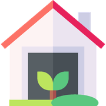
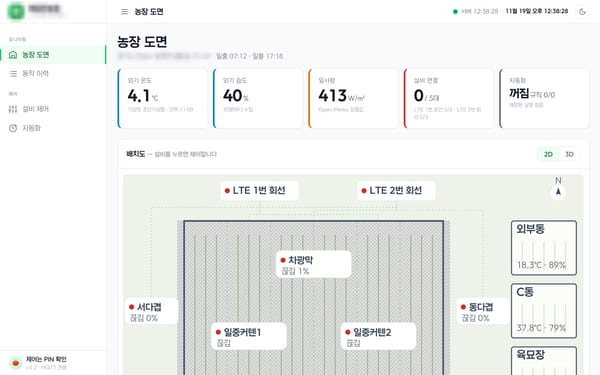
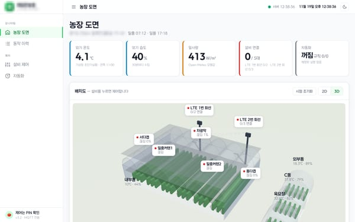
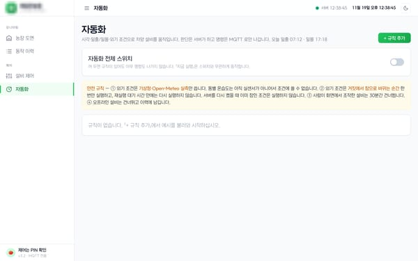
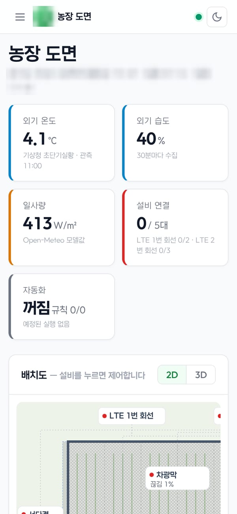

스마트팜·농업
하우스 설비를 스마트폰으로 열고 닫고, 시간과 날씨에 맞춰 자동으로 움직이게 하는 스마트팜 원격제어 플랫폼을 만듭니다.

시설 원예는 온도·습도·빛·물의 작은 변화가 생산량과 품질을 좌우합니다. 하지만 농가가 하루 종일 하우스를 지키며 커튼을 여닫고 물을 줄 수는 없습니다.
스마트팜은 센서로 환경을 측정하고, 개폐기·차광·관수·난방 같은 설비를 원격과 자동으로 제어해 이 일을 덜어 줍니다. 탭스페이스는 시설 하우스 설비의 원격 개폐와 자동화를 위한 제어 플랫폼을 직접 구축했습니다.
스마트팜이 해결해야 할 문제와 IoT 해법
하우스 상태를 보려면 직접 가야 합니다
환경 값과 설비 상태를 스마트폰으로 확인하고 원격으로 조작합니다.
해 뜨고 질 때마다 커튼을 여닫아야 합니다
일출·일몰과 시각에 맞춰 보온커튼·차광막을 자동으로 움직입니다.
갑작스러운 고온·저온에 대응이 늦습니다
외기 조건이 기준을 넘는 순간 정해 둔 동작을 실행합니다.
넓은 농지에 통신선을 깔기 어렵습니다
LTE·저전력 장거리 무선으로 멀리 떨어진 설비를 연결합니다.
스마트팜에 필요한 IoT 기술
시설 원예 스마트팜에서 일반적으로 쓰이는 IoT 기술입니다. 현장 여건과 기존 설비에 맞춰 필요한 것을 골라 구성합니다.
생육 환경 센싱
온습도·CO2·광량·토양 수분·EC·pH를 측정해 기록합니다.
개폐·차광·보온 자동화
측창·천창 개폐기, 차광막, 보온커튼을 온도와 일사량에 맞춰 움직입니다.
관수·양액 자동 공급
토양 수분과 시간표에 따라 관수하고 양액 공급을 조절합니다.
냉난방·유동팬 제어
난방기·유동팬·보광등을 환경 기준에 맞춰 운전합니다.
경보와 원격 제어
기준을 벗어나거나 설비가 멈추면 알리고, 스마트폰으로 바로 조치합니다.
데이터 기록과 분석
누적된 환경 데이터로 재배 기준을 다듬고 작기별로 비교합니다.
구축 사례: 시설 하우스 원격제어·자동화 플랫폼
비닐 연동 온실의 보온·차광 설비를 원격으로 제어하고 자동화하는 웹 플랫폼을 구축했습니다. 화면은 설비가 오프라인인 상태에서 캡처한 실제 운영 화면이며, 농원 이름과 주소는 가렸습니다.

농장 배치도 — 2D설비 위치와 상태를 도면 위에서 확인 
농장 배치도 — 3D하우스와 설비를 입체로 보고 제어 
자동화 설정시각·일출일몰·외기 조건 규칙과 안전장치 
모바일 대시보드스마트폰에서 같은 화면으로 확인·제어


- 원격 개폐와 개도율 제어일중(보온)커튼 2대, 차광막 1대, 측면 다겹보온커버 2대 등 설비 5대를 원격으로 열고 닫으며 개도율(%)을 지정합니다.
- 현장 통신현장 LTE 회선 2개로 설비 컨트롤러를 연결하고, MQTT로 서버와 통신합니다.
- 농장 배치도 대시보드2D·3D 배치도에서 설비 위치와 상태를 보고, 설비를 눌러 바로 제어합니다.
- 자동화 규칙 3가지정해진 시각·요일, 일출·일몰 기준, 외기 조건(기온·습도·일사가 기준을 넘는 순간)으로 동작을 예약합니다. 외기 값은 기상청 초단기실황 실측을 씁니다.
- 안전장치자동화 전체 스위치는 기본으로 꺼져 있고, 사람이 조작한 설비는 30분간 자동화가 건너뜁니다. 오프라인 설비는 건너뛰고 이력에 남기며, 제어와 규칙 변경에는 PIN 확인을 거칩니다.
- 동작 이력명령·자동화·장치 응답 이력을 검색하고 CSV로 내보냅니다. 모바일 화면과 다크 모드를 지원합니다.
적용 기술
| 센서 | 온습도·CO2·광량(일사)·토양 수분·EC·pH 센서, 기상 관측 데이터 연계 |
|---|---|
| 구동기 | 개폐기 모터, 차광·보온커튼, 관수 밸브·펌프, 난방기·유동팬 릴레이 |
| 통신 | LTE, Wi-Fi, 저전력 장거리 무선, 산업용 유선 통신(양액기 등 연동), MQTT |
| 운영 | 웹 대시보드(2D·3D 배치도), 자동화 규칙, PIN 확인, 동작 이력 |
함께 보면 좋은 내용
정밀 농업 구축 후기
현장 구축 과정은 네이버 블로그에서 소개합니다.
자세히 보기 (새 창)임베디드 시스템
현장 설비를 원격 제어하는 하드웨어·펌웨어 기술입니다.
자세히 보기IoT 제품 개발
농가 맞춤 장비가 필요하면 회로부터 앱까지 함께 개발합니다.
자세히 보기
스마트팜·농업 도입을 검토하고 계신가요?
현장 환경과 기존 설비를 알려 주시면 맞춤 구성을 제안해 드립니다.